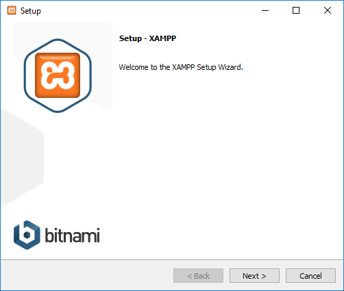

Stap 1: Download van xampp
Zoek in google xampp of click op de link hier.
Zoek in google xampp of click op de link hier.
Dubbel click op het bestand dat je hebt gedownload dan zou je dit scherm moeten krijgen.

Click dan op next en nog een keer als het goed is ben je dan op dit scherm.
Kies daar welke locatie hij het programa installerd en click dan op next.
Click daarna nog een keer op next om de installatie te starten. Dan zal dit scherm op komen.
Als hij klaar is met installeren click dan op finish.